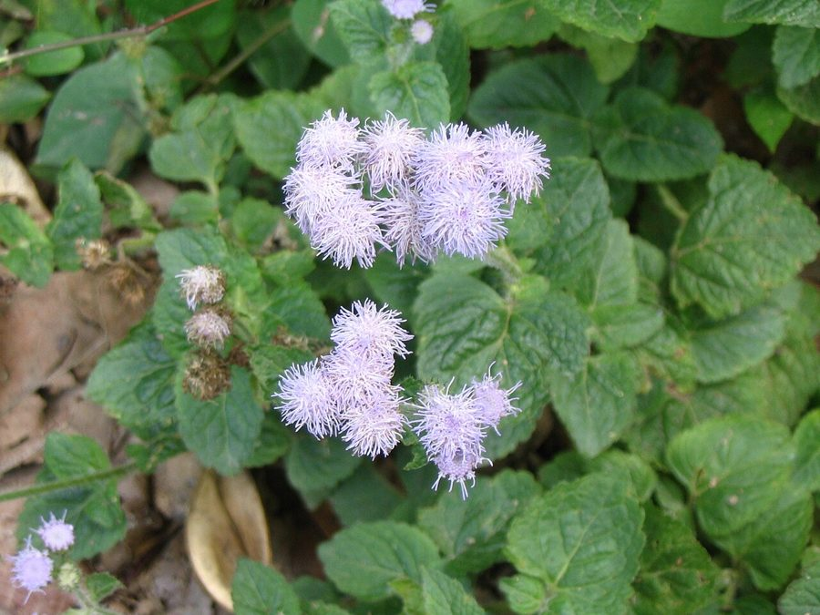

जंगली पुदीनाBillygoat Weed
Ageratum conyzoides · Asteraceae · FLR-0061

- Scientific name
- Ageratum conyzoides L.
- Family
- Asteraceae
- Hindi
- जंगली पुदीना
- Status here
- invasive
- IUCN
- not evaluated
When to look कब देखें
Expected mainly in January, February, March, April, October, November, December.
जंगली पुदीना / Billygoat Weed
Ageratum conyzoides L. — Asteraceae
जंगली पुदीना (उजला फुदकी या गंधारी) — उत्तर प्रदेश के खेतों की मेड़ों, नम बगीचों, सिंचाई नालियों और बंजर भूमियों पर उगने वाला एक अत्यधिक आक्रामक विदेशी (Central American) शीतकालीन वार्षिक खरपतवार है। इसके पत्ते देखने में पुदीने (Mentha) जैसे दिखते हैं और इनमें से बकरे जैसी तेज तीखी गंध (goat-like smell) आती है, जिसके कारण इसे 'जंगली पुदीना' या 'गोठवेड' (Goatweed) कहा जाता है। इसके ऊपरी हिस्से पर छोटे, हल्के नीले, बैंगनी या सफेद रंग के रोएंदार फूलों के गुच्छे (flower heads) लगते हैं। यह मिट्टी में विषाक्त रासायनिक यौगिकों (allelopathic chemicals) का स्राव करता है जो आस-पास उगने वाली फसलों और देशी पौधों के बीजों के अंकुरण को रोक देते हैं। मवेशी इसकी तीखी गंध और विषाक्तता के कारण इसे छूना भी पसंद नहीं करते हैं।
Quick Identification त्वरित पहचान
| Feature | Description |
|---|---|
| Form | Erect, branching winter annual herb (30–100 cm tall), covered with soft, white spreading hairs |
| Leaves | Opposite, ovate leaves (2–8 cm long) with blunt teeth (crenate) and a hairy surface, smelling strongly of goat/mint when crushed |
| Flowers | Small, discoid flower heads (4–6 mm diameter) grouped in flat-topped clusters; color is pale blue, violet, or white |
| Stem | Cylindrical, green or purplish stem, densely covered in long, soft white hairs |
| Fruits | Small, dry, black achenes (1.5–2 mm long) with 5-awned scales, easily dispersed by wind and animal fur |
Field tip: Look for a hairy winter weed with mint-like leaves that release a sharp, unpleasant odor when pinched. It carries clusters of fluffy, thread-like pale blue or white flower heads.
Morphology आकारिकी
Biometrics (typical measurements for wild specimens in Basti):
| Feature | Measurement |
|---|---|
| Plant height | 30–100 cm |
| Leaf length | 2–8 cm |
| Leaf width | 1.5–5 cm |
| Flower head diameter | 4–6 mm |
| Achene length | 1.5–2 mm |
Leaves: Leaves are simple, ovate or triangular, carrying glandular hairs on both surfaces that secrete volatile oils (precocenes), which interfere with insect development.
Flowers & Seeds: The inflorescence consists of terminal corymbs containing 40–50 small flower heads. Each head consists only of tubular disc florets, giving them a fuzzy, thread-like appearance.
Vocalisations
Plants do not possess nervous systems or vocal organs and cannot produce sounds.
- Sound production: Silent; no sound production.
Behaviour & Ecology व्यवहार और पारिस्थितिकी
Ageratum conyzoides is a fast-growing, light-loving weed that thrives in moist, fertile alluvial soils of eastern UP. It releases phenolic compounds into the soil, exhibiting strong allelopathic properties that suppress the growth of surrounding native plants. It grows rapidly during the cooler winter months, forming dense mats that choke out slow-growing winter crops.
Life Cycle / Phenology जीवन चक्र
- Germination: Seeds germinate extensively in October–November as temperatures drop and soil moisture is high after the monsoon.
- Flowering & Fruiting: Peaks from December to March.
- Dispersal: The lightweight, dry seeds are carried over long distances by wind (anemochory) and easily stick to the clothes of farmers and fur of passing animals.
Associated Species / Interactions सहजीवी संबंध
- Pollinators: The pale blue flowers are visited by hoverflies, small butterflies, and solitary bees for nectar.
- Vector Harbor: Often acts as a reservoir host for crop-damaging viruses, including the Tomato Leaf Curl Virus and Potato Virus Y.
Predators / Natural Enemies शत्रु
- Fungi: Leaf rust fungi sometimes form orange spots on the lower leaf surface.
- Mammals: Strictly avoided by livestock due to pyrrolizidine alkaloids that cause liver damage if eaten in quantity.
Agricultural / Human Relevance कृषि प्रासंगिकता
Major agricultural competitor and pest harbor.
- Crop Competition: Infests wheat (
[FLR-0051 Wheat]), mustard ([FLR-0052 Mustard]), and vegetable fields in Basti, reducing yields by competing for resources. - Toxicity: Contains hepatotoxic pyrrolizidine alkaloids. If mixed with fodder, it can cause chronic liver disease in cattle.
- Folk Use: Fresh leaf paste is applied by villagers to treat minor bleeding wounds, but this carries a risk of dermatitis and systemic toxicity.
- Control: Farmers pull it up by hand or apply pre-emergent herbicides in late autumn.
Expected Locally स्थानीय रूप से अपेक्षित
Not a field record. Written from published accounts for eastern Uttar Pradesh. No confirmed local sighting yet — if you have seen it, that is what the atlas needs.
अभी तक स्थानीय पुष्टि नहीं। यह विवरण प्रकाशित स्रोतों से है, किसी अवलोकन से नहीं।
A highly visible weed during the winter season across Basti district, particularly in irrigated mustard fields, orchards, and wet garden borders in Bahadurpur, Khalilabad, and Harraiya blocks. It forms large, pale-blue carpets along rural pathways from December to February.
Distribution वितरण
Global range: Native to tropical Central America (Mexico, Caribbean). It has invaded tropical and subtropical regions of Asia, Africa, and the Pacific.
In India: Widespread in all states, from the plains up to 2,000 meters in the Himalayas.
In Uttar Pradesh: Abundant in agricultural lands and wet soils.
In Basti district / eastern UP: Invasive resident; extremely common.
Research Questions शोध प्रश्न
- Does the allelopathic effect of Ageratum conyzoides leaf extract vary between wheat and mustard seeds in Basti soils?
- What insect species are most commonly observed visiting the flowers of Ageratum conyzoides during Basti's winter peak?
- Can a child collect five dry, fluffy seed heads of Billygoat Weed and observe the wind carrying the black seeds when blown? — A simple seed dispersal activity.
- How does the plant height and density of Ageratum conyzoides differ between irrigated fields and dry roadsides in eastern UP?
- Are there any local insects in Basti that feed on the leaves of Ageratum conyzoides despite its toxic precocene content? / क्या बस्ती में कोई स्थानीय कीट हैं जो इसके विषाक्त प्रीकोसीन घटक के बावजूद जंगली पुदीने के पत्तों को खाते हैं?
Similar Species मिलती-जुलती प्रजातियाँ
| Species | Key Difference | हिंदी |
|---|---|---|
| Ageratum houstonianum (Mexican Ageratum) | Flower heads are larger and more crowded, with longer and more numerous blue-violet florets; sticky hairs on calyx. | बड़ा जंगली पुदीना — बड़े फूल, अधिक नीला रंग |
| Chromolaena odorata (Siam Weed) | Grows as a large woody shrub (1–3 m tall); leaves are larger, triangular, with three main veins; flowers are pale pink. | तीव्र गंध खरपतवार — झाड़ीदार पौधा, हल्के गुलाबी फूल |
| Mentha arvensis (Field Mint) | Stems are square; leaves are highly aromatic (pure mint scent), flowers are borne in axillary whorls, non-invasive. | पुदीना — चौकोर तना, शुद्ध पुदीने की महक, गैर-आक्रामक |
Taxonomy & Classification वर्गीकरण
Original description. Carl Linnaeus described the species as Ageratum conyzoides in 1753 in Species Plantarum (Vol. 2, p. 839). The type locality was America. The genus name Ageratum is derived from the Greek ageratos (not growing old), referring to the long-lasting nature of the flowers. The specific epithet conyzoides means "resembling Conyza" (another genus in the Asteraceae family).
Subspecies. Monotypic.
Family and order placement. Placed in the order Asterales, family Asteraceae, subfamily Asteroideae, tribe Eupatorieae.
Phylogenetic notes. Ageratum is closely related to Eupatorium, sharing similar discoid heads and tubular florets.
IUCN status rationale. Not evaluated (NE) by the IUCN Red List. It is an aggressively spreading pantropical weed under no threat of extinction.
Photo Gallery फोटो गैलरी
References संदर्भ
- Linnaeus, C. (1753). Species Plantarum. Laurentii Salvii, Holmiae, Vol. 2, p. 839. [original description]
- Hooker, J.D. (1881). Flora of British India. L. Reeve & Co., London, Vol. 3, p. 243.
- Dagar, J.C. (1987). Studies on allelopathic potential of Ageratum conyzoides. Indian Journal of Agricultural Sciences, 57(5), 353–355.
- National Weed Science Research Centre. Weed Identification Manual: Ageratum conyzoides. ICAR, Jabalpur.
- Botanical Survey of India. State Flora Series: Flora of Uttar Pradesh. BSI, Kolkata.
- GBIF Occurrence Data — Ageratum conyzoides (2026). GBIF taxon key: 5401673.
Source file: species/flora/weeds/billygoat_weed.md